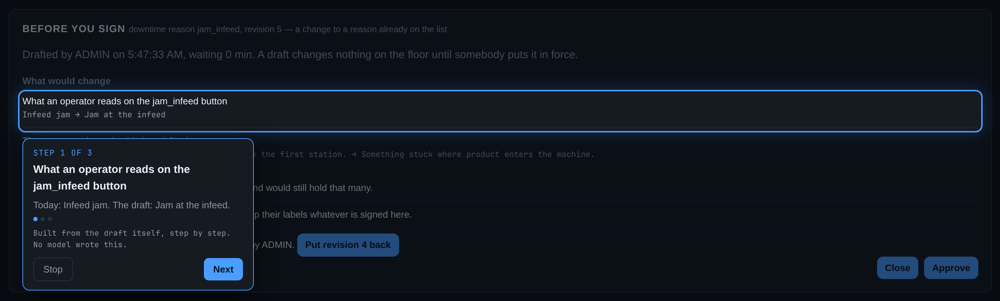
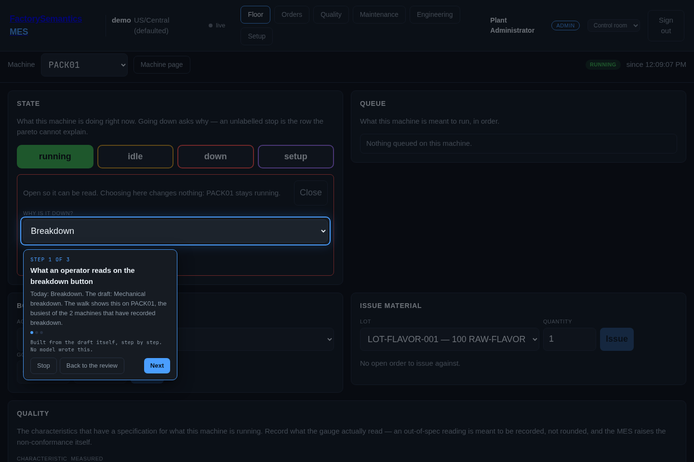

Who names the reasons¶
At 06:10 a machine stops. Somebody has to say why, and until this feature existed the screen asked an open question and got an open answer: a text box whose placeholder read "e.g. jam at infeed, waiting on fitter", stored exactly as typed.
The downtime pareto then grouped on that string and on nothing else. So jam, Jam, jam at infeed and infed jam were four separate reasons, each too small to act on, and the real top reason on the line was invisible because it was spelled four ways. The operator did nothing wrong.
The other half of the same problem is that the list they should have been
picking from did not exist, and there was nowhere to put it. A reason
vocabulary is not equipment, not a material and not a routing, so
masterdata.write did not cover it — and of the built-in roles only admin
held any capability that wrote configuration at all. A process engineer who
wanted to name six downtime reasons had to be made administrator of the whole
plant, or had to find one.
Both halves are one failure: the plant's vocabulary had no author. This page is how it gets one.
The short version¶
- Somebody holding
process.definedrafts a reason, on Engineering › Configuration › Downtime reasons (/dashboard/reasons) or through the API. Nothing changes on the floor. - It appears on the Waiting for you panel on
/dashboard— for the people who can act on it, and for nobody else. - Somebody holding
process.approveputs it in force. The row records who and when. - The station screen offers it at the next screen load, and the pareto groups on it.
- Undo is one move: approve the previous revision. Nothing is deleted.
The two capabilities¶
| Capability | What it grants | Who holds it as shipped |
|---|---|---|
process.define |
Draft the plant's process vocabulary | admin, and the agent role |
process.approve |
Put a vocabulary in force | admin only |
They are separate because drafting a list and putting it in front of every
operator on the site are different jobs, and because an administrator can now
compose a process engineer role that holds them without holding
users.manage or masterdata.write. A role is a named bundle of
capabilities and bundles are data, so that takes an afternoon on the admin
screen and no deployment.
The agent role holds the drafting half and never the approving half — the
same shape work instructions, triggers and setpoint adjustments already have.
An assistant that reads a month of what operators typed and proposes six codes
is the point of the feature; an assistant that signs its own proposal is not.
The screen¶
Engineering › Configuration › Downtime reasons (/dashboard/reasons) is
where a plant's vocabulary is read and written. It is one row on the Engineering
workspace's Configuration page (/dashboard/config/engineering), which is
where every configurable thing in that workspace is listed - one Configuration
entry per workspace, never one per setting, however many settings arrive. The
address above is unchanged, so a bookmark still opens this screen directly.
Everything below can also be done with a token and curl, and was only
possible that way until this screen existed.
The list is open to anybody who can see the plant — a vocabulary nobody can read is a vocabulary nobody can choose from — and shows every word the plant has ever had, not just the approved ones. A word that is on the list and has an unsigned change waiting says both things at once, because an engineer told only the second would read a word as off the floor while operators are still choosing it:
| Column | What it says |
|---|---|
| Reason | the code the analysis groups on, and the name on the operator's button |
| Description | the sentence shown beside it at the machine |
| Status | where the word stands — on the list or retired — and beside it what is waiting on somebody: change waiting, retirement waiting. A word nobody has ever signed reads drafted, not signed |
| Rev | the revision in force, and the one drafted behind it: 1 → 2 |
| Drafted | who wrote the newest revision, on whose behalf if an agent wrote it for somebody, and when |
| Signed | who put the revision in force and when, or — where nothing has been signed yet |
| Labels | how many recorded intervals carry the code |
Four tiles above it count the plant's vocabulary — on the list, drafts waiting, retired, and every word in all — and the list states its own total under the table.
The form is only there for a person holding process.define, and it is
absent rather than refusing: everyone else reads the list and sees no form at
all. Three boxes — code, name, description — and Save draft.
- A new word: type a code that does not exist yet.
- The next revision of a word already in force: type its code (the box offers what the plant already has). New revision on the row fills the form for you.
- Editing a draft nobody has signed: Edit draft on the row. Nobody is choosing from it yet, so it is edited in place rather than stacking up revisions.
Nothing in the form re-states what the server already checks. A code that is spelled wrong, taken, or a word the product owns comes back as the server's own sentence, shown as it was written — a second copy of the rule in JavaScript is the copy that drifts, and the one that drifts is the one the person reads.
Saving puts the draft on the Waiting for you panel and changes nothing on the floor. The screen says so where you are standing:
jam_infeed rev 1 drafted — it reaches the floor when somebody signs it on the Floor screen
Retiring from the screen¶
Retire appears only on a word that is actually on the list. It asks first, and the confirmation carries the number:
Retire
jam_infeed? 412 recorded intervals carry it. They keep the label — retiring changes what may be chosen next, never what was chosen before. The retirement is a draft until somebody signs it.
That is the same number the API demands in labels_intervals, put in front of
the person before they decide instead of arriving as a refusal afterwards. A
code nothing carries says so plainly rather than showing a zero that reads like
a missing figure.
The retirement is a draft like any other: the word stays on the list until
somebody holding process.approve signs it.
What the screen does not do¶
It does not sign anything. Drafting and approving are separate powers and this is the drafting screen; putting a revision in force — including the undo, which is approving the previous revision — happens on the Waiting for you panel or through the API below. A screen that both drafted and signed would be one click away from being a table somebody edits.
Drafting one¶
The same act from a terminal:
curl -sX POST "$MES/equipment/downtime-reasons" \
-H "Authorization: Bearer $TOKEN" -H 'Content-Type: application/json' \
-d '{"code": "jam_infeed", "name": "Jam at the infeed",
"description": "Something stuck where product enters the machine."}'
The code is what the analysis groups on and what leaves the MES: two to
forty characters, lowercase, starting with a letter. The name is what the
operator reads on the button. The description is the sentence shown beside
it, which is how two reasons that read alike on a button can still be told
apart at the machine.
Validated before approval, not after. A code is unique, it is spelled the
way a topic segment is spelled, and it may not be a word the product already
owns — a state (running, down), a capability, a role, a KPI. The list is
read from the product itself rather than typed anywhere, so a word that
becomes product vocabulary next month is protected the day it lands. A reason
that spelled the same word as something the product owns would mean two things
at once, and a fleet comparing two plants could not tell which.
Drafting the same code again edits the open draft: nobody is choosing from it yet.
Finding one waiting¶
This is the step the product's three existing approval lifecycles were missing. A work-instruction draft, a trigger draft and a proposed adjustment each wait on a screen somebody has to know to open, and nothing tells anybody — there is no inbox, no aggregate count and no mail, webhook or push of any kind. Meanwhile drafting sits with supervisors and agents while approving sits with administrators, so the proposer and the approver are usually different people.
GET /dashboard/pending-approvals answers what is waiting that I may act
on, from the caller's live capabilities, and the Waiting for you panel on
/dashboard renders it: the kind, the code, what it is, who drafted it and on
whose behalf, how long it has waited, and one action that signs it.
Counted, and with the whole queue's total rather than the page's.
The rule it answers to:
A pending item appears on the screen of the role that can act on it, counted, with its total — and on no screen that cannot act on it.
So a person who can approve nothing never sees the panel at all. And a draft nobody acts on waits, visibly: it does not expire, it does not go live by itself, and the only thing that changes with time is one column, so a forgotten draft reads as "11 days" rather than falling off the end of a list.
One kind is behind that endpoint today — the downtime vocabulary. Work
instructions, triggers, setpoint adjustments and the design-chat notes join
the same panel next; each already has a lifecycle, and joining is an entry in
fsmes/services/review.py's registry — a reader and a reviewer — not a new
mechanism.
Reading one before you sign it¶
A row on that panel says a draft exists. It says nothing about what the draft would do to the plant, and signing on that is signing blind.
Review on the row opens the substance, from
GET /dashboard/pending-approvals/{kind}/{code}/{revision}:
| What it shows | Why it is there |
|---|---|
| The draft against the revision it would supersede | A diff in the plant's own words — both values, never a summary of them |
| How many reasons the list holds, and would hold | A list that grows by one and a list that shrinks by one are different acts |
| How many recorded intervals already carry the code | And what the drafter said when they wrote it: a draft that waited a week was written against a smaller number |
| Who drafted it, and on whose behalf | An agent drafting for a person says so here, not only in the audit trail |
| The revision it would supersede, whole | With the one click that puts it back — undo is in the same reading as the change, not a hunt through a history screen |
It is gated by the same capability that lists the kind. A panel that refuses the button while showing the substance is a panel that leaks the draft, so a caller who cannot sign a downtime reason cannot read its drafts here either.
Being walked through what changes¶
Walk me through it, on the review, hands the draft to the floor assistant — the same guide mode that walks an operator through recording an inspection, with the same ring around the real control on the real screen.
The walk is generated from the draft's own diff: one step per change, in order, and the approve button last with what undoing it would take said on the card. A draft that changes a name and a sentence is three steps. A retirement is two: what leaves the list, with the count of intervals that keep their label, and then the button.

Nothing in it is narrated by a model. The steps are built from the two values themselves, deterministically, and the coach card says so — built from the draft itself, step by step; no model wrote this. What is about to be signed is the one thing in this product that may not be paraphrased (decision 0031).
The step goes to the floor, not to a description of the floor¶
A change to this vocabulary lands in one place: the dropdown an operator picks
a stop from, at the machine. So that is where the walk takes you. A step whose
change has a real control leaves the review and rings the actual
<select> on the station screen, with the reason under review already chosen
in it, so you read the change standing in front of the thing it changes.
The destination is computed from the plant's own records, never proposed by anything: the machine that has recorded the most stops under this code, with the coach card saying which machine and how many machines have recorded it at all. The vocabulary itself is plant-wide — every station offers the same list — so which station is a fact only the history can answer.

A step that changes the word rings the dropdown; a step that changes the sentence beside it rings that sentence, unless the plant has not written one yet — a ring around an empty paragraph points at nothing, so that step rings the word instead.
That screen opens the list to be read, not answered. Never mind and
It is down are off the screen while it is open, and no state change is
armed: an approver reading a dropdown must not be one mis-click from putting a
running machine down. Close puts it away.
Three cases have nowhere honest to stand, and keep the old behaviour — the step stays on the review and describes the change in words:
| Case | Why there is no destination |
|---|---|
| A brand-new reason | Nobody can have chosen a word the plant does not have yet, and the dropdown does not contain it, so ringing that dropdown would point at the absence of the thing under discussion |
| A code on the list that no machine has ever chosen | Naming a machine out of the equipment table would be inventing a place |
| A code already retired | It has left the list the walk would point at |
The last step is always the Approve button, back on the review — so following the walk to the end returns you to the signature rather than stranding you at the machine. The coach card also carries a Back to the review button on any step that has left the dashboard, for stopping early, and the review you were reading is reopened when you get back. Nothing is signed by any of this: the draft is still waiting until Approve is pressed.
This is the first guide in the product that nobody authored, and the guide runner learned three things to play it: a step may point at one of several rows carrying the same anchor, by position (how many rows there are is not known until the draft is read); a step's destination may name which machine and not only which screen; and a guide may name the screen it came from, so a walk that crossed can be brought back. Everything else — the ring, the coach card, crossing screens, stopping — is what it already did.
Approving, and undoing¶
curl -sX POST "$MES/equipment/downtime-reasons/jam_infeed/approve/1" \
-H "Authorization: Bearer $TOKEN"
The approved revision supersedes the one before it and the operator's dropdown changes at the next screen load. To undo, approve the previous revision. The revision that was in force becomes superseded; nothing is deleted and no history is rewritten.
Retiring a code¶
A vocabulary shrinks as well as grows. Retiring is a revision like any other,
with "retires": true, and it is refused unless the draft says how many
recorded intervals carry the code:
jam_infeed labels 412 recorded intervals. Say so in the draft
(`labels_intervals`) before retiring it: a code leaves the list with somebody
having looked at what it already labels, or it leaves it blind.
Because of the rule that makes this cheap:
Retiring a code changes what may be chosen next. It never changes what was chosen before.
An interval labelled jam_infeed keeps that label when jam_infeed leaves the
list, and the pareto keeps showing it. A record is not un-made — the same
principle decision 0029
applies to an order that over-ran. So the worst outcome of a vocabulary
somebody regrets is a month of stops labelled with words they regret, which is
exactly the situation a plant with a text box is already in.
On the floor¶
Once the plant has an approved vocabulary, going down takes a code from it. The station screen shows a select instead of the text box, and the API refuses a typed sentence with the reason why. That is deliberate: a list nobody has to use is a suggestion sitting beside the text box that caused the problem.
It is not a demand to invent something. The shipped starting vocabulary carries an explicit not yet determined — a stop labelled that way is counted, can be found again and can be re-labelled, which is more than a blank box ever gave anybody.
A plant that has approved nothing is unchanged: there is no list, so the text box is what it has and the text is what it gets.
Three of the four writers are untouched. A trigger composing
"Infeed jam (Alarm_Word=1)", an inbound feed carrying the incumbent system's
own reason column, and an agent tool all keep writing text, and the pareto
says how much of the window came from each rather than pretending. (The OPC
agent is a fifth thing and supplies no reason at all: every stop a machine
reports by itself lands unlabelled. That is the cold start, and it is why the
vocabulary has to come from somewhere other than the machines.)
What the pareto says afterwards¶
GET /analysis/downtime groups by code where there is one and by text where
there is not — the two never merge — and states both totals:
| Field | What it is |
|---|---|
from_the_list_seconds |
downtime labelled with a code from the approved list |
typed_seconds |
downtime labelled with text somebody typed |
unlabelled_share |
downtime nothing labelled at all |
vocabulary_total |
how many reasons are currently on the list |
With the unlabelled share, the three account for every second of downtime in the window. One number alone would let a plant with six codes and a thousand typed sentences look like a plant with six reasons, and how much of this window came from the list is the number that says whether the vocabulary is being used.
What a plant starts with¶
A pack may carry masterdata/downtime_reasons.json
(plant packs). The three lab packs and the cutlery demo ship six
words — breakdown, changeover, micro stop, starved, blocked, and not yet
determined — shaped after the ISO 22400 categories a plant will recognise.
They are a starting vocabulary: the plant owns the list from its first
edit, and fsmes pack apply never rewrites a code that is already there.
What this does not do yet¶
- The clustering step. The assistant reading the last thirty days of what operators typed and proposing "these 40 spellings look like 6 reasons" is the follow-up. It needs a plant with a month of people typing; the lab plants are driven by the OPC agent, which supplies no reason, so they hold no typed history to cluster.
- The coverage dry run that would report what a proposed list would have covered, for the same reason.
- The analysis screen does not yet print the two totals above; the API carries them today.
- Scrap has no reason column at all. That is a second pilot.
See also¶
- Reading OEE — where the unlabelled bar comes from
- Plant packs — shipping a vocabulary with a plant
- Who names the severities — the same loop, the second time: the plant's own words for how bad a finding is
- Configuration is authored by roles — the design this is the first piece of, and decision 0035